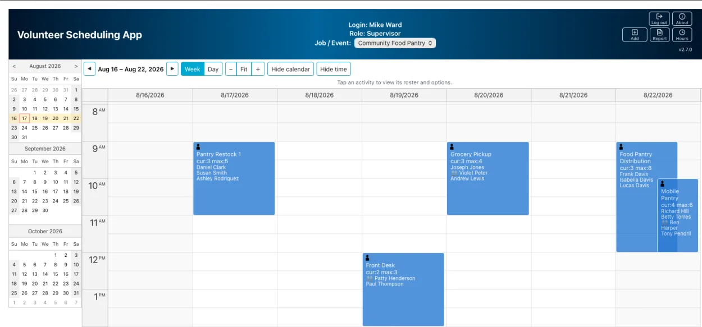

At Your Services Volunteer Scheduling
Self-service volunteer scheduling, day-of check-in, and the hours report your board and funders ask for.
Stop chasing volunteers and managing signups. Give your community a simple, self-service schedule they'll actually use — people claim and cancel their own spots, and the schedule keeps itself organized.
Open the live demo How to sign in to the demo
Overview
If you coordinate volunteers or staff, you know the drain: the back-and-forth email to fill a shift, the spreadsheet only one person can edit, too many people showing up for one task and nobody for another, and a printed roster that gets lost or re-typed. At Your Services Volunteer Scheduling takes that off your plate. It's a web-based schedule where people sign themselves in and out of activities on a shared calendar — from a phone if they like — while the app quietly prevents over-scheduling and shows each person exactly what their role should see. Volunteers manage only their own people, supervisors see the complete roster, and administrators keep control.
Hosting & pricing
Small nonprofits rarely have dedicated IT staff, so we handle setup, hosting, and upkeep. Free hosted options may be available for qualifying small organizations — just ask.
- Software — free. There is no software-license cost.
- Self-hosted — you host and manage it on your own infrastructure, with our onboarding help.
- Managed hosting — we set up and run your instance for you. Costs are pass-through infrastructure only (app hosting, database, and email): typically about $10–40/month for most organizations depending on size and email volume, and up to roughly $60–100/month for larger organizations needing dedicated resources. A one-time setup/installation fee (typically $150–500) is currently waived for nonprofits and early adopters — you cover only the third-party hosting/email costs. Each organization is kept separate: its own database, its own sign-in keys and its own running copy of the application, even where several organizations share one hosting plan.
- Licensing — not open source. A self-hosting organization receives the source code free, under a signed license agreement for its own use.
- Third-party components — the app is built on open-source components, each under its own license; a complete list is displayed within the application.
Thinking of running it yourself? See what self-hosting needs.
Features at a glance
- Self-service scheduling — volunteers sign up and cancel from any phone, signing in with a password or an emailed link, and one account can cover a family or a whole crew.
- Capacity limits & live status — per-activity maximums with live counts and color-coded status, so full shifts and gaps are obvious.
- Privacy and delegation — volunteers see only their own sign-ups and private Jobs/Events stay hidden (enforced on the server); Supervisors each run their own.
- Exceptions without touching the plan — lock a fully-staffed date, or cancel one, even an occupied one, with your reason emailed to everyone on it.
- Change who is on a shift — take someone off before the day, sign up a volunteer who phones in, or add a walk-in on the day; either way the shift still goes ahead.
- Bring guests — a volunteer signs up "+2" and the guests hold their places; staff take their names when they arrive, and add a guest with no account at all.
- Change or end a program without losing people — an edit shows who it affects before it saves, the people affected can be emailed, and finished programs leave the calendar with their history kept.
- Flexible recurrence & events — daily, weekday, day-of-week or monthly patterns, open-ended or fixed; dated multi-day events that can return next season.
- Check-in and check-in sheets — record who actually showed up from a front-desk tablet, a volunteer's phone or the roster, or print the day's roster with write-in lines.
- Hours, impact & fill-rate reports — monthly, quarterly and annual hours scheduled and checked in, estimated economic value, and fill percentages that show where to recruit.
- Reminders that catch problems — an email about a day before each shift with an add-to-calendar file and a "Can't make it?" link; addresses the mail provider refuses, or later reports as bounced, are flagged and stopped.
- Email you can see — every message waits its turn in a queue that survives restarts and keeps to your mail plan's daily and monthly allowance; an Email Activity page shows what was sent and how it went.
- Bring your volunteer list with you — import Volunteer accounts from a spreadsheet saved as CSV, checked row by row before anything is created.
- Accountability that keeps history — a tamper-evident admin audit trail, and deleting a Job/Event keeps its past so last quarter still reports correctly.
- Secure, ad-free, and yours — hashed passwords, expiring sessions and server-side access control over HTTPS; no ads, ever; your data stays your organization's; your name, colors, logo and wording.
What it looks like


Both screenshots come from the live demo — sample data, not a real organization's. The screens themselves are the real application; you can open the same views and run the same report yourself.
Who it's for
- Churches & ministries — greeters, worship team, nursery, ushers.
- Food banks & nonprofits — recurring shifts and event slots.
- Museums & historical societies — docents and guides across recurring operating days, with the hours a board or grant application asks for.
- Schools & PTAs — parent volunteers for events and classroom help.
- Community & one-time events — coordinating numerous volunteers across single or multiple days.
It is not limited to these organizations — it is a flexible application that can accommodate many types of organizations with scheduling needs.
Security
Built with layered, industry-standard security. Passwords are never stored in readable form, sign-ins are protected against guessing and abuse, and every action is permission-checked on the server based on your role.
The security measures in detail
- Passwords hashed (never stored in readable form); optional passwordless email sign-in with expiring links.
- Signed-token sessions that expire automatically; protection against session theft (XSS); logout clears cached data.
- Role-based access control enforced server-side; private Jobs/Events visible only to assigned users.
- Rate limiting against brute-force and email-spam abuse; security HTTP headers; input validation and injection guards.
- Information transmitted over HTTPS when deployed behind TLS.
Configuration & branding
Make it your own — brand, terminology, sign-in methods, and scheduling behavior are all configurable per deployment.
Every setting is listed in the user guide.
The full user guide
How Jobs, Events and activities work, each role's permissions, locking and cancelling, guests, check-in, reports, the audit trail, a walk-through of the demo and every configuration setting — all in the user guide.
Getting started
Getting started begins with a conversation — book a quick 15-minute consultation and we'll walk through your organization's needs, gather a short configuration & branding checklist, choose hosting, provision and brand your instance, and hand it off with admin guidance.
Ready to see if it fits your organization? Try the demo, or grab 15 minutes with us.
Try the live demo Book a 15-Minute Consultation Back to At Your Services